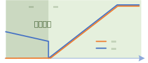
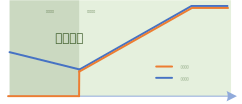

飞车启动功能
创建于2021-9-25
该项目完成于2021-6，原创
该项目完成于2021-6，原创
飞车启动是变频器常用功能。通常情况下，变频器在启动时，给定转速为零，如果此时电机在转动，变频器需要将电机的速度在短时间内降为零，然后再加速至目标转速。这种情况下，电机可能因为突然减速而受到较大的冲击，为了避免这个问题，可以先检测电机的实际转速，然后在电机实际转速的基础上开始调整给定转速，最终达到目标转速。这样一来，也会带来另外一个好处，就是电机加速的时间可以缩短，从而提高工作效率。这种先检测电机转速再启动的功能，就是飞车启动。


永磁同步电机由于永磁体的存在，在转动时，无需励磁就会产生反电势，因此检测反电势就可以估计出电机的转速。异步电机转子上没有永磁体，其磁场是定子绕组通电后产生的，如果未建立起磁场，任凭电机以多高的转速旋转，也无法检测到反电势，也就无法估计电机转速。异步电机的转速估计通常通过搜索法实现，通过注入不同频率的电压或电流信号，通过检测相应的反馈来估计电机转速。对于同步磁阻电机，其转子上同样没有永磁体，一般也要通过注入特定信号来实现速度估计。
永磁同步电机飞车启动的实现较为容易，因此将侧重点放在了异步电机上。本项目新开发了一种异步电机转速搜索方法，使用该方法，无需注入较大电流，而且可以根据电机参数自行设置搜索斜率，以保证能够准确地搜索到电机转速，非常实用。